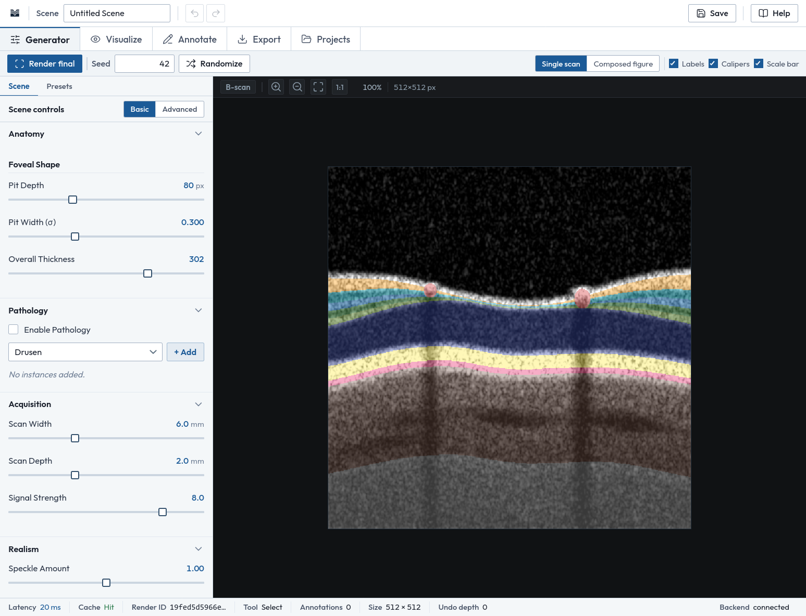
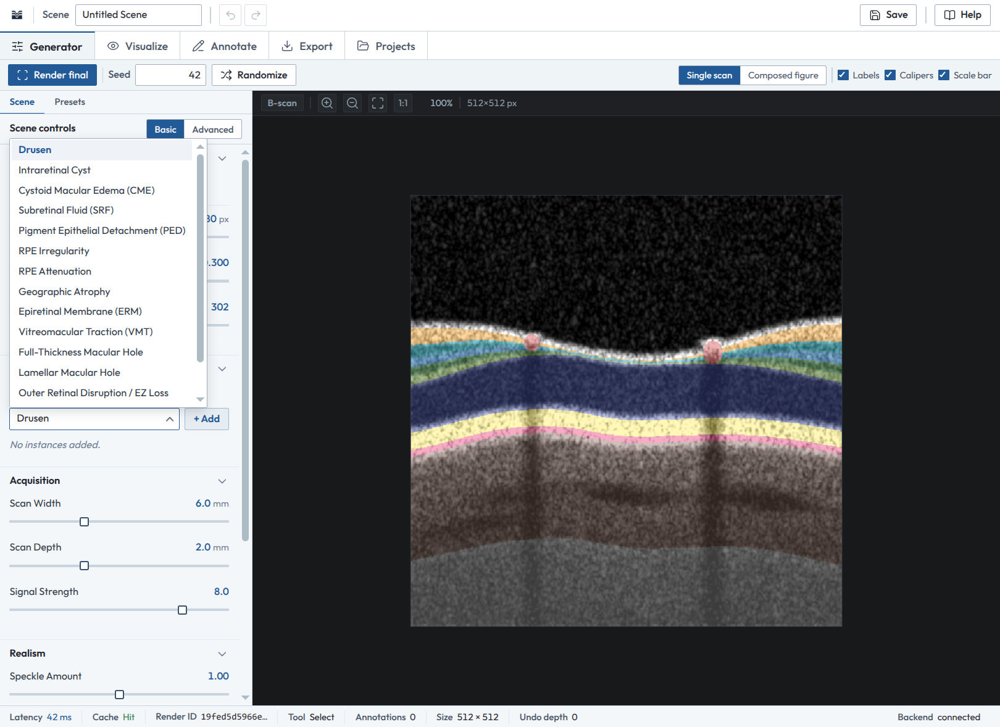
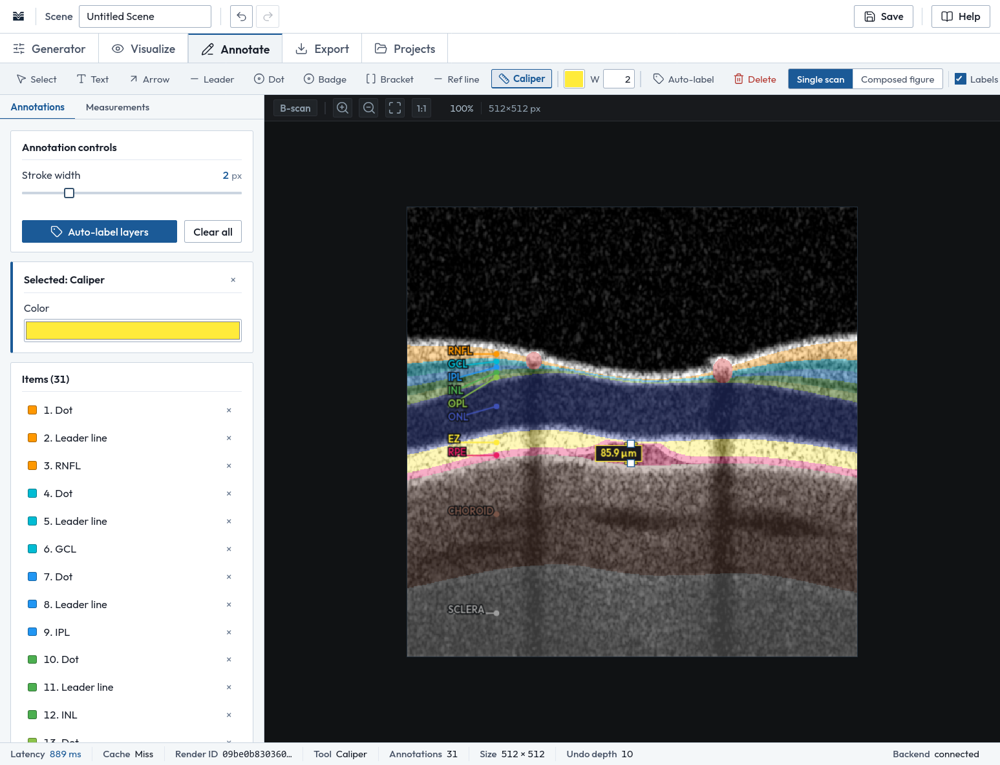
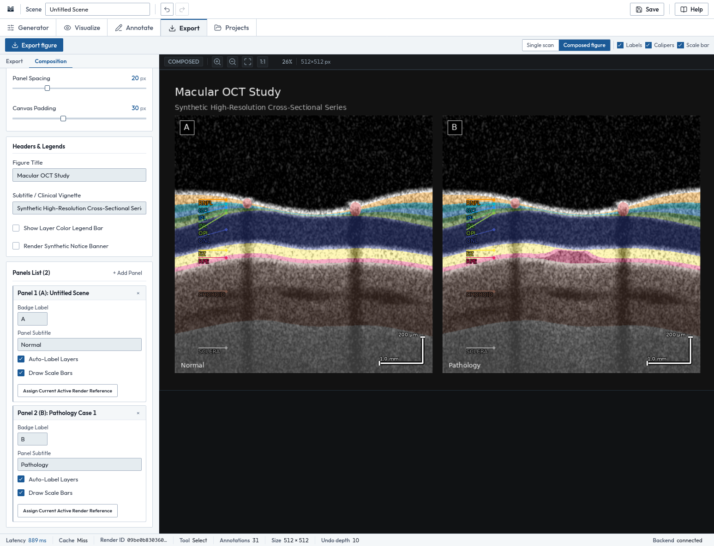

Getting started
From the Start page choose Open workspace. Documentation, About and Privacy are reachable from the Start page or the workspace Help menu and open in a new tab, so the current scene is not lost.
OCTForge · Synthetic OCT figure authoring
OCTForge generates synthetic OCT B-scans from a parametric retinal model, then helps you annotate, measure, compose and export them as figures for lectures, course materials and scientific-style illustration. It runs on your own computer.
Install OCTForge Read the documentation View the source
Every image is synthetic. OCTForge is not for diagnostic use.

Why it exists
OCTForge lets an educator describe a retina, add a pathology, choose an acquisition setup and produce a clean cross-section that fits the question being taught. Scenes can then be annotated, measured, composed into multi-panel figures, saved as projects and exported for slides, print and the web.

Set foveal pit depth and width and overall thickness; add pathology instances and tune severity, size, extent, location and reflectivity; choose scan width, depth and signal strength; adjust speckle, contrast and gamma; add artifacts. Start from one of twelve presets, then change anything. Seed and Randomize explore variations within physiological bounds.
Motion, dropout, shadowing, saturation, mirror, poor signal, banding.
Presets are parametric starting points for illustration. Each can be adjusted.
Auto-label places a dot, leader line and label on each of ten layers using the renderer’s own layer map. Calipers report distance in micrometers or millimeters, calibrated from the scan’s width and depth. The Measurements section lists central foveal thickness, mean total retinal thickness, foveal pit depth and width, and the thickness of each layer. Add text boxes, arrows, numbered badges, brackets and reference lines. Annotations are stored as vector data and never alter the rendered image.
Labeled layers: RNFL, GCL, IPL, INL, OPL, ONL, EZ, RPE, choroid, sclera.


Single, side-by-side, strips, stacks, 2 × 2 or an automatic grid, with a figure title, panel captions, A–D badges and a layer legend.
Scale bars of 1 mm and 200 µm, drawn from the scan’s own dimensions.
PNG, JPEG, TIFF, PDF or SVG with a vector overlay, at 72 to 1200 DPI, from seven presets.
| Preset | Specification |
|---|---|
| Publication | 600 DPI TIFF (LZW) |
| Lecture Slide | 1080p PNG with notice |
| PowerPoint | 1080p clean PNG |
| A4 Print | 300 DPI PDF |
| Web Optimized | 72 DPI JPEG |
| High-Res Master | 600 DPI PNG |
| Low Bandwidth | 72 DPI grayscale |
Exports embed a synthetic-image notice in file metadata; label synthetic images as synthetic when you use them.
Set anatomy, pathology, acquisition, realism and artifacts, or start from a preset.
A forward model turns the scene into a grayscale B-scan and a matching layer map.
Choose colors, add labels, take measurements. The scan is not re-rendered.
Arrange scenes as panels with titles, badges, a legend and scale bars.
Write PNG, JPEG, TIFF, PDF or SVG for slides, print or the web.
A procedural, physically motivated approximation. It is not a clinical-grade physical simulation. Read its output as illustration, not as a measurement of a real eye.
OCTForge is distributed as source code. There is no installer or prebuilt binary.
Needs Python 3.12 or newer, Git and a current desktop browser. Run everything from the repository root.
The launcher starts one Uvicorn server on 127.0.0.1:8000 and polls /api/health. When it answers, your default browser opens http://127.0.0.1:8000/, showing the Start page with an “Open workspace” button. If the health check never succeeds, open the address yourself. Stop the server with Ctrl+C.
Clone the repository.
git clone https://github.com/YOUR-ORG/octforge.git
cd octforgeCreate and activate a virtual environment.
python3 -m venv .venv
source .venv/bin/activatepython -m venv .venv
.venv\Scripts\activateInstall the dependencies.
pip install -r backend/requirements.txtStart OCTForge from the repository root.
python run.pyOptional: choose another port.
python run.py 8001From the Start page choose Open workspace. Documentation, About and Privacy are reachable from the Start page or the workspace Help menu and open in a new tab, so the current scene is not lost.
The window has a top application bar (scene name, undo, redo, Save, Help), workspace tabs, a toolbar that changes with the tab, a left panel with section tabs, the viewport with zoom controls, and a status bar showing latency, cache hit or miss, render ID, active tool, annotation count, image size, undo depth and backend status.
Generator. Scene holds Anatomy, Pathology, Acquisition, Realism and Artifacts, with a Basic / Advanced switch; the preview re-renders automatically as values change. Presets holds the 12-preset library (Load scene replaces the scene; Add to figure sends it to the composition) and a randomizer. Render final produces the full-quality image with its layer map; Seed fixes random elements; Randomize draws a new scene within physiological bounds.
Visualize. Choose a mode (grayscale, colored layers, hybrid, educational), a palette (clinical, color-blind-safe, educational, custom), global opacity, and per-layer color, opacity and visibility. These settings do not change the underlying image or require a re-render.
| Tool | Key | Use |
|---|---|---|
| Select | V | Select, move, resize, edit; dragging empty space pans |
| Text | T | Drag to draw a text box, then type |
| Arrow | A | Drag from tail to point |
| Leader | L | Line with a dot at its start |
| Dot | D | Click to place a landmark |
| Badge | N | Numbered marker, counting up automatically |
| Bracket | B | Drag vertically to bracket a layer or lesion |
| Ref line | R | Drag a straight reference line |
| Caliper | M | Drag between two points to measure |
The Annotations list has a property inspector (text, font size, rotation, color). Auto-label adds labels to ten layers. The caliper reports micrometers or millimeters, calibrated from the scan width and depth of the current scene. The Measurements section lists central foveal thickness, mean total retinal thickness, foveal pit depth and width, and per-layer thickness, and can draw scale bars (1 mm lateral, 200 µm axial). These are measurements of a synthetic model, not of a patient.
Export offers the seven presets and detailed settings: scope (single B-scan or composed figure), format (PNG, JPEG, TIFF, PDF, SVG), resolution in DPI, color mode (RGB, grayscale, RGBA), and toggles for annotations and layer labels, caliper measurements, scale bars and an educational-notice watermark. Export figure downloads through the browser. Composition arranges scenes as panels with figure title, panel captions, badges, spacing, a layer legend and scale bars; the Single scan / Composed figure switch in the toolbar changes what the viewer shows.
Save from the application bar; the Projects tab lists projects, which can be loaded, renamed, duplicated, reset or deleted. Files live in projects/ beside where you launched the app. Creating or opening a project with unsaved changes asks whether to save, discard or cancel.
On a Mac use Cmd for Ctrl.
| Shortcut | Action |
|---|---|
| Ctrl + Z | Undo the last scene change (annotation edits are not part of scene undo) |
| Ctrl + Y, or Ctrl + Shift + Z | Redo |
| V T A L D N B R M | Choose a tool (Annotate workspace only; ignored while typing) |
| Esc | Finish text editing; otherwise return to Select and clear selection |
| Delete or Backspace | Delete the selected annotation |
| Ctrl + Enter | Finish text editing |
| ← → Home End | Move between workspace tabs when a tab has focus |
| + and − | Zoom, when the image view has focus |
| F, 1 | Fit to view; show at 100% (image view focused) |
| Mouse wheel; drag | Zoom around the pointer; pan with the Select tool |
| Symptom | Cause | Fix |
|---|---|---|
Import errors mentioning backend | Launched from the wrong directory | cd to the repository root, run python run.py |
| Port already in use | Another program is using 8000 | python run.py 8001 |
| Browser did not open | No default browser, or health check timed out | Open http://127.0.0.1:8000/ yourself |
| Interface uses a generic font | Offline; Outfit falls back to the system font | Cosmetic only |
| Saved projects not listed | Launched from a different folder than before | Launch from the folder that holds projects/ |
| Work disappeared on reload | Scenes live in browser memory until saved | Use Save |
| Tests fail to collect | httpx not installed | pip install httpx |
projects/ folder of the directory you launch from; exports are downloaded by your browser.Every image is synthetic. It is generated from parameters, is not derived from any real patient, and has not been validated for clinical decision-making. OCTForge is not a diagnostic device.
projects/ folder.Interface icons from Lucide (ISC license). Typefaces Outfit and Instrument Serif, SIL Open Font License, served by Google Fonts.